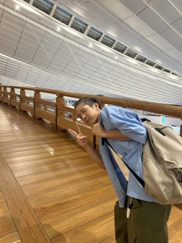
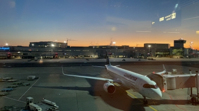
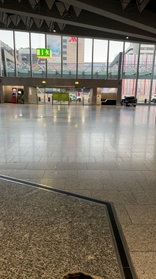
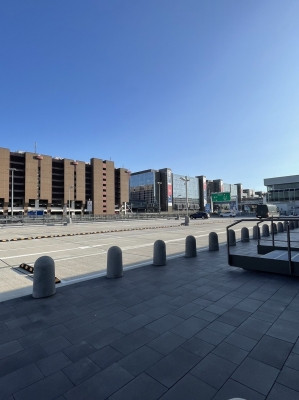

2023年お盆の MISSION : IMPOSSIBLE
ゴールデンウィーク前からちょこっとずつ準備してきたのに
なかなか具体的にならず、結局7月に入ってからバタバタと
準備に追われたハルの「サッカー留学」・・・(汗)
10日午前中の新幹線で東京に向かい、夜9時半の飛行機で
ハルは留学先のドイツへ旅立っていきました。

羽田空港の日本橋のオブジェ ↑
ホントはスペインに行きたかったんだよ、だけどずっと前から
「行きたいんだよ〜。」と言っていたにもかかわらず
本気だと思われていなかったのか(笑)ちっとも話が進まず・・・
スペインの球団が練習生( ? )を受け入れる体制が整っていなかったり
球団の本拠地の引っ越しが時期的に重なっていたり
いろいろ事情があったらしいんだけど・・・私どもの方には情報も
なかなか伝わってこなかったし、実質的に放置されてたっぽいのよね(悲)。
留学のタイミングとしてはこの夏休みしかなかったこともあり、
あきらめきれず「スペインがムリならドイツで !! 」ということになって
浦和レッズ・京都サンガなどの監督経験もあるゲルト・エンゲルスの主催する
団体から話を進めてもらうことになったんだけど、ここからがバタバタだった(汗)。
具体的な話が決まってきたのは7月の半ば、飛行機のチケット取れたのが20日(大汗)、
翌週パスポート取得、保険加入・・・送金のためのデビットカード的なモノは
結局出発期日までには間に合わず、わずかばかりの現金を持たせることに(汗)。
留学費用の請求が来たのは8月に入ってからでした(白目)。
↑ 我が家の最寄りの駅で。今日も暑い〜・・・
台風が来ていたけど、まだ影響はありませんでした。
本人としては初めての海外渡航、
私どももそんなに海外旅行に慣れているわけではないので
準備に不備がないかどうか、とても気を使いました。
翌11日の早朝、フランクフルトに到着し空港の外に出るまでは
「手続き上必要な書類等に不備はないか ? 」どっきどき(笑)。

↑ハルがフランクフルトから送ってきた写真。
現地時間で早朝6時前です。
現地でお世話になるスタッフに無事に会えて外に出られたのは
到着から3時間後くらいかな ?
無事に入国できたのを確認出来たのは日本時間で午後3時頃、
やっとちょこっとホッとできました。

↑ハルからの写真 2
フランクフルトの空港出入口 ?

↑ハルからの写真 3
外にに出られたらしい(笑)。いい天気だ〜。
でも、今って海外でもGPSとかで位置の確認が出来ちゃうし
ふつーにLINEも送ってくるし(Wi-Fiがあることが前提だけど)
国境を感じませんね〜。
時差はあるけど、学校の寮にいるのとたいして変わらないよ(笑)。
受け入れ先は、空港から車で3、4時間の場所にあるデューレンという街です。
ヤツは英語も話せないのでスタッフに車で迎えに来てもらいました(汗)。
お世話になるのは団体の寮です。
到着した翌日にはどんな試合か分からないけど
参加させてもらったようですよ〜。
帰国は現地30日出発、31日日本着です。
それまでどんなステキな経験をして来るんでしょう。
楽しみデス。
はるちゃんはどこいったでしゅか ?
ひましゃんはちょこっとしゃびしいでしゅよ・・・。